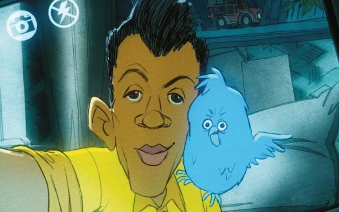

Carmen
by Stromae
A poignant critique of
modern society
The song "Carmen" by Stromae, released in 2013 on
the album Racine Carrée, is much more than just a
piece of music. With sharp lyrics and an upbeat rhythm, Stromae addresses profound themes such as love, solitude, and the impact of
social media on our lives.
This work grabs the audience's attention while raising crucial questions about our time.
A classic inspiration
Titled after the opera Carmen by Georges Bizet,
the song highlights the character of Carmen,
a free and independent woman whose passion
leads her to her downfall.
In the opera, Carmen refuses to conform
to society’s expectations, which leads to her
tragedy.
Stromae reinterprets this story through the
lens of modernity, making Carmen
a metaphor for the modern woman, torn
between her desires and social expectations.
The Critique of Social Media
One of the striking elements of "Carmen" is its
sharp critique of social media. In the music video,
tweets representing users' reactions scroll by, illustrating how the quest
for recognition and love through these
platforms can lead to loneliness.
Superficial relationships and instant judgments
from the internet often drive people apart.
The chorus, which evokes the ephemeral nature
of interactions based on likes and
shares, resonates particularly with a
generation hooked on social media.
Stromae reminds us that this need for approval
can have tragic consequences, drawing a link between the classic story and the realities of
modern life.

A Universal Message
With poignant lyrics and a catchy melody,
"Carmen" resonates with a wide audience.
Stromae speaks of universal human experiences,
such as the desire for acceptance and the struggle against
social norms.
His style, blending pop with African influences,
adds emotional depth to his message.
Quickly becoming iconic, the song
particularly resonates with young people, who face
the challenges of social media.
By integrating cultural references and contemporary realities,
Stromae creates a work that questions our
relationship with love and technology in a hyperconnected world.
In conclusion, "Carmen" by Stromae is a powerful work
that transcends music to offer a sharp social critique. By reinterpreting the
character of Carmen, Stromae sheds light on
the challenges faced by modern women, torn between their
desires and the expectations of contemporary society.
His denunciation of social media highlights
how these platforms, although they seem to
bring people closer together, can also lead to
loneliness and isolation.